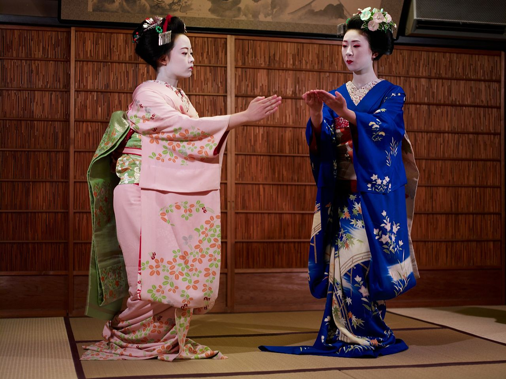
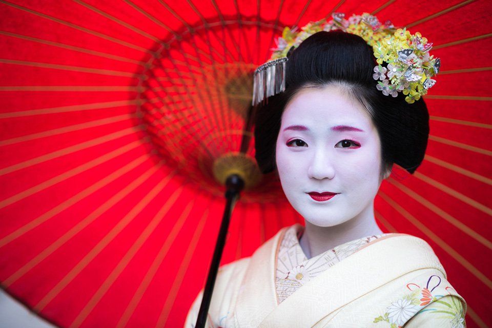
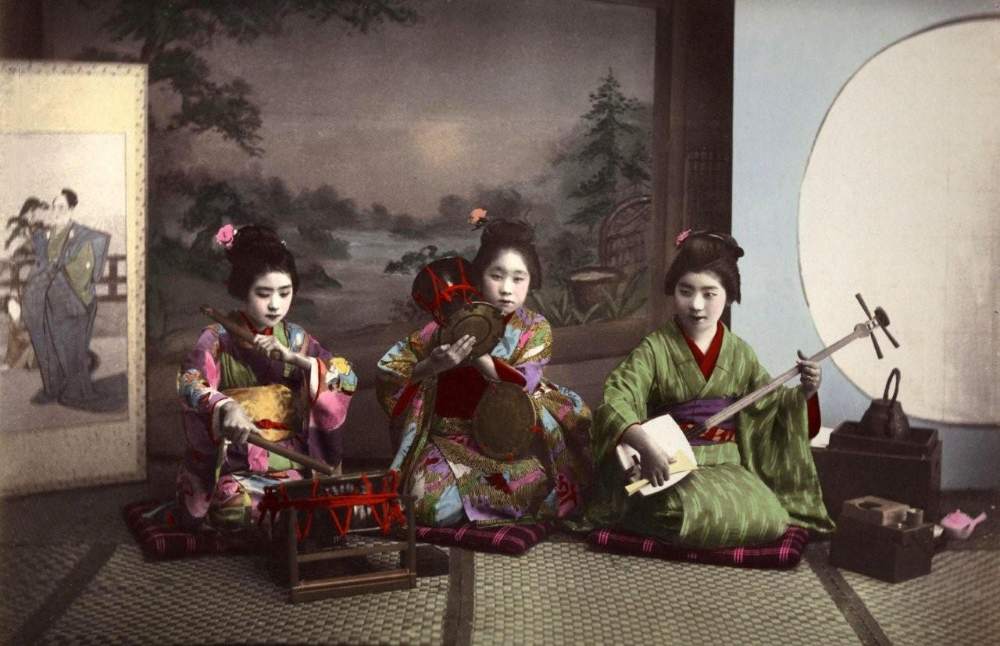
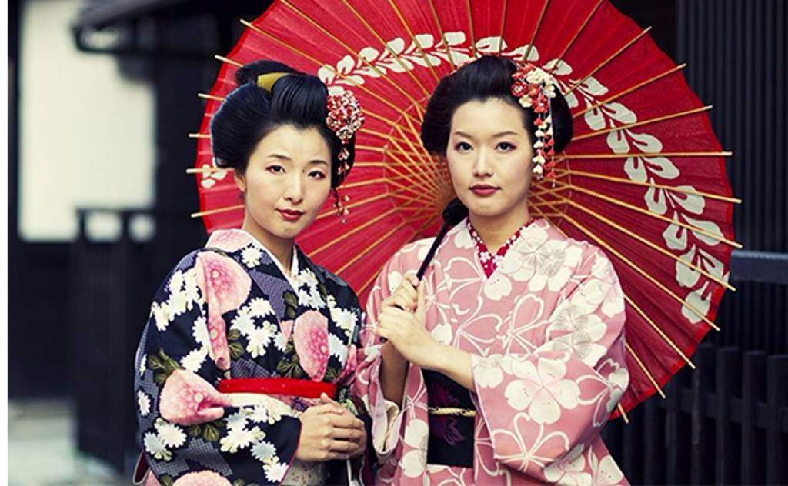
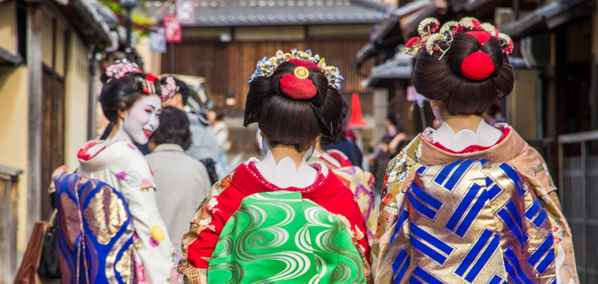

Gejša
Gejša alebo inak nazývané aj Gejko sú tradičné japonské spoločníčky, ktoré ovládajú mnohé tance, hry alebo hudobné nástroje. Ich úlohou bolo a je pobaviť a spríjemniť čas mužom, v dnešnej dobe aj ženám. Gejša nie je prostitútka. Označenie gejša znamená "umelkyňa" , názov gejko pochádza zo západného Japonska. Žena, ktorá sa vyúča za gejšu sa nazýva Maiko, čo znamená "dieťa tanca" , taktiež sa niekedy zvykne označovať aj ako "polovičný šperk" a to z toho dôvodu že im platia o polovicu menej ako gejši. Ak sa dievča chce stať gejšou, nemusí sa najprv stať maiko, môže sa z nej stať rovno gejša, avšak to bude zahrňovať ročnú prípravu. Žena, ktorá má viac rokov ako 21 je považovaná za pristarú na to, aby sa stala maiko, takže sa rovno stane gejšou, samozrejme až po prijatí do komunity. Vek pre dievča aby sa stala maiko je 18, v západnom Japonsku už 15 rokov.

Pôvod
Gejše vznikli pôvodne z dievčat nazývaných "Saburoko" . Boli to dievčatá, ktoré sa túlali po krajine. Nemali rodinu, pretože tá ich vysťahovala. Niektoré z nich sa predávali avšak niektoré s lepším vzdelaním sa naučili zarábať cez zabávanie vysoko postavených občanov. Po presťahovaní šlachty do Kyóta sa začala formovať kultúra gejše. Muži v tomto období neboli verní ženám, pretože žena považovala za druhoradé styk s mužom, ktorí z tohoto dôvod chodil za milenkami. Dôsledkom toho boli budované nevestince, kde bola prostitúcia legálna, kde mali ženy "zmluvy". Ich najvyššia trieda sa volala "Tayuu" a boli to priame predchodkyne dnešních gejší. Tayuu boli komináciou herečky a prostitútky. Ich tanec bol erotický, vtipný . Tento štýl dostal názov "Kabuku", čo znamená divoký a nemravný. Tieto ženy uvádzali muži "Geisha". Áno, boli to práve muži, ktorí sa stali prvými geishami.
Neskôr sa aj ženy začali nazývať geisha.

1. žena, ktorá sa nazývala geishou bola Fukagawská prostitútka. Bola to vyškolená speváčka a vedela taktiež hrať hru Kikuya čo bolo v tej dobe veľmi populárne. Počas nasledujúcich 20-tich rokov sa rozšírili do územia celého Japonska, väčšina z nich pracovali ako zabávčky. Ženy, ktoré boli prichytené ako predávajú sami seba, boli uveznené a následne potrestané. Prostitúcia bola povolená, len ak mala žena zmluvu, geishe sa odvíjali samostatne ako umelkyne a mužské spoločníčky.

začiatkom 19- teho storočia začalo umenie geisha opadať. Čoraz viac sa stávalo menej populárnou, čo viedlo k vyvíjaniu umení u geishi. Ženy geisha mali taktiež veľa kategórií (niektoré mali sex s mužským zákazníkom, iné sa striktne držali svojej úlohy spoločníčky a zabávačky). Prostitúcia bola legálna až do začiatku 20-teho storočia, takže sa veľmi praktizovala na území celého Japonska. Druhá svetová vojna priniesla so sebou veľký pád geishi, pretože mnohé z nich museli odísť pracovať do tovární. Meno geisha taktiež stratilo niakí spoločenský status, pretože veľa prostitútiek sa začalo nazývať "geisha girls". V roku 1944 boli všetky podniky kde geisha pracovali nútené zavrieť a ísť pracovať do tovární. Po roku sa niektoré geisha vrátili a rozhodli sa vymaniť spod západného vplyvu a vrátiť sa späť k tradíciám. V dnešnej dobe nie je striktne dané či môže mať pohlavný styk so zákazníkom, je to jej osobná vec.

Geisha dnes
Moderné geisha žijú v tradičných geisha domoch "okiya" na miestach zvaných "hanamachi" (ulice kvetov) počas ich učenia. Geisha sa učí hrať na tradičné nástoroje ako shamisen, shakuhachi, bubny taktiež sa učí hrať hry, spievať pesničky, kaliografiu, čajovú ceremóniu a literatúru. Majú na sebe makeup (pozostáva z bieleho ryžového prášku na celej tváry spolu s červeným rúžom a červenou alebo čiernou linkou okolo očí), ktorý pokrýva ich tvár, krk a aj časť hrudníka. Taktiež kimono, ktoré má rôznu farbu na základe slávnosti, obdobia alebo posavenia v hierarchií. Vlasy majú geisha upravené tak, aby im ich držala spona na vrchu hlavy.
